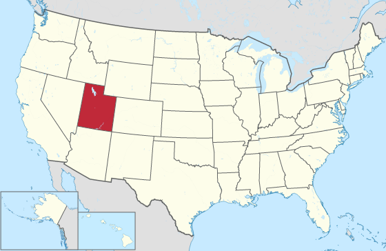
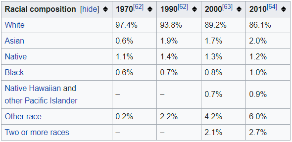

Basic information
- Utah is a state in the western U.S.
- It became the 45th state admitted to the U.S. in 1896.
- Utah is 13th-largest state of U.S. by area and 31st-most-populous state of U.S.
- Utah capital is Salt Lake City.
Geography
- Utah is one of the Four Corners states.
- He is bordered by Idaho, Wyoming, Colorado, New Mexico and Arizona.

- Utah is known for its natural diversity.
- You can find many features there, from desert with sand dunes to pine forests in mountain valleys.
Demographics
- Population of Utah was 2,995,919 people on July 1,2015.
- Utah consists 5 metropolitan areas: Salt Lake City, Provo-Orem, Ogden-Clearfield, Logan and St. George.
- It consists 6 micropolitan areas: Brigham City, Heber, Vernal, Price, Richfield and Cedar City.
- Racial breakdown of population:

- 55% of Utahns are members of The Church of Jesus Christ of Latter-day Saints (LDS - Mormons).
- Another 22% are atheistic, 13% are Protestants, 5% are Catholic and last 5% are other faiths.